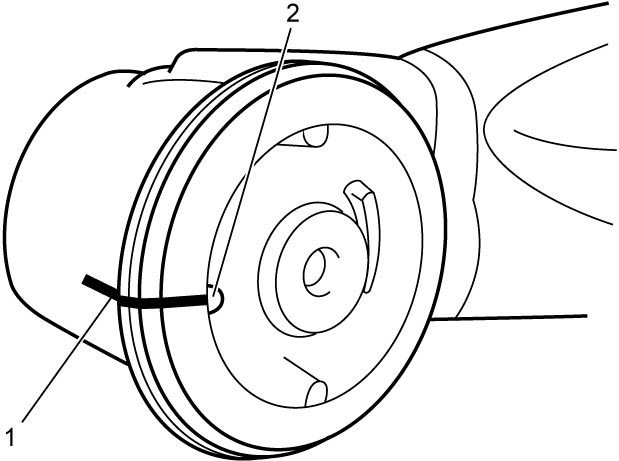
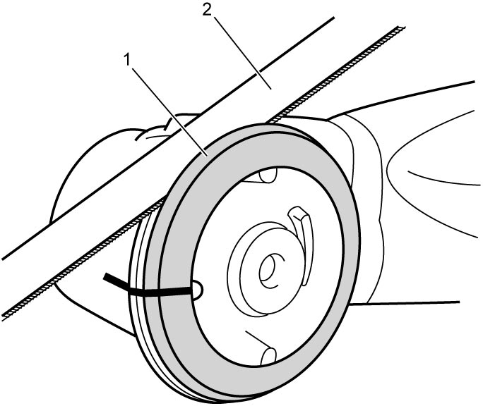
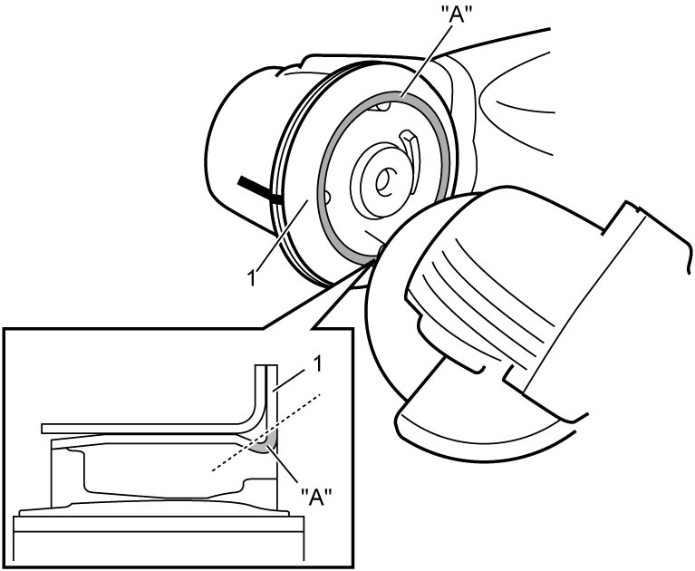
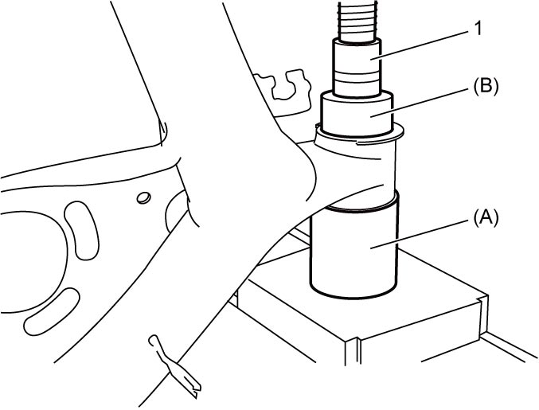
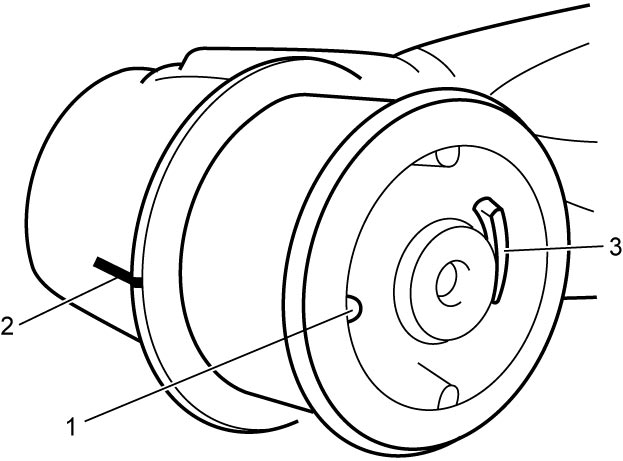
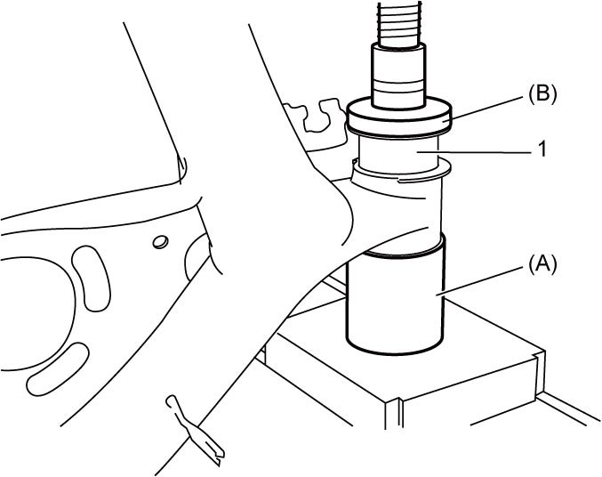

2C
| Rear Axle Bushing Removal and Installation |
Removal
1)Make matchmark (1) on the boss of the rear axle at the protrusion (2) of the rear axle bushing for correct installation as shown.


 "Expand image")
2)Cut off rubber part (1) of rear axle bushing using a jigsaw (2) or cutter.

 "Expand image")
3)Cut flange part (1) from bushing by grinding section “A” of bushing over the entire circumference as shown in figure.
NOTICE:
If you grind too much to cut off the flange, you will damage the rear axle.
Limit the amount of grinding to the minimum amount if necessary.

 "Expand image")
4)Push out rear axle bushing using hydraulic press (1) and special tools.

 "Expand image")
Installation
1)Align protrusion (1) of bushing with matchmark (2) of rear axle drawn before removal.
At this time, protrusion (3) should be vehicle rear side as shown in figure.
At this time, protrusion (3) should be vehicle rear side as shown in figure.

 "Expand image")
2)Press-fit rear axle bushing (1) using special tools and hydraulic press until flange of rear axle bushing is in contact with boss of rear axle.

 "Expand image")